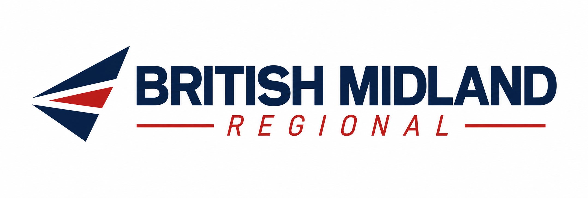
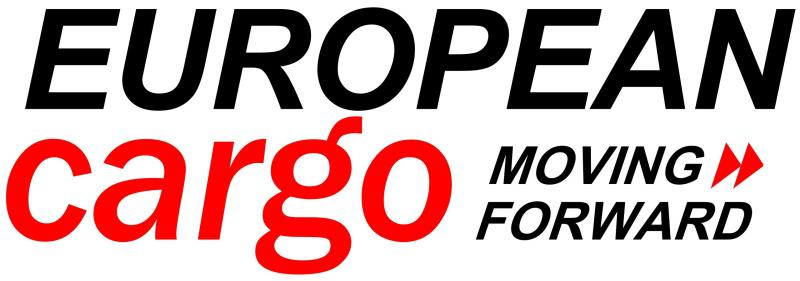

British Midland Ltd
Beating Heart ClassPioneer Class
Passenger services from Birmingham, connecting Europe and beyond through our short-haul and long-haul networks.
Explore Mainline
BRITISH MIDLAND GROUP
One virtual aviation group, bringing together mainline passenger services, regional connections and European Cargo under British Midland Group management.
Explore our businessesBritish Midland Ltd, British Midland Regional Ltd and European Cargo each have a distinct role within our flight simulation community. Our passenger flying is organised into three classes: Beating Heart, Pioneer and Foundry.
A shared community, identity and operational infrastructure.
Passenger services from Birmingham, connecting Europe and beyond through our short-haul and long-haul networks.
Explore MainlineSixteen regional routes from Birmingham, East Midlands and London Heathrow, with a choice of Fokker 100 or ATR 72.
Explore RegionalA 10-aircraft Airbus A340 fleet, with hubs in the United Kingdom, China and Austria, under British Midland Group management.
Explore CargoBased at Birmingham, our mainline operation brings together two passenger classes with different aircraft and destinations.
32 short-haul destinations across Europe, the Mediterranean and North Africa, operated with the A319, A320 and A321neo.
Explore Beating Heart routes →10 long-haul destinations across North America, the Caribbean, the Middle East and Asia, operated with the Airbus A350-1000.
Explore Pioneer routes →
Beating Heart and Pioneer passenger services.

Regional, island and coastal flying from three bases.
Foundry connects our regional bases with smaller airports, island communities and coastal destinations. Choose the Fokker 100 or ATR 72 on every route.
Fly to the Isle of Man, Southampton, Exeter, Cardiff, Newquay and Jersey, with destinations varying by base.
European Cargo is now under British Midland Group management, bringing dedicated cargo flying into our virtual aviation community.
The European Cargo Virtual fleet comprises 10 Airbus A340 aircraft, supported by eight hubs across the United Kingdom, China and Austria.

Airbus A340 operations under British Midland Group management.
7 aircraft
2 aircraft
1 aircraft
From a regional hop to a long-haul departure, explore our network and join the British Midland Virtual community.
Join British Midland